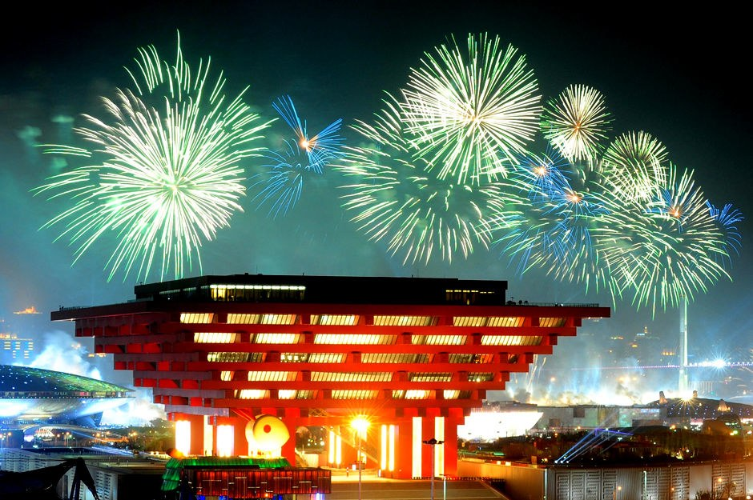

Jennifer Hubbert, “Collecting History: Chinese Exceptionalism at the Shanghai Expo”

Jennifer Hubbert is based in the Department of Anthropology, Lewis and Clark College. Her most recent work has been on historical memory and public culture in China. She is currently studying the 2008 Olympics in Beijing and is working on a book about generational narratives of nationalism among Chinese intellectuals and on a paper addressing the recent growth of Chinese historical theme parks.
Jennifer Hubbert
Saturday, September 28, 2013
Jennifer Hubbert, “Collecting History: Chinese Exceptionalism at the Shanghai Expo”
Recent years have seen an explosion in assertions about Chinese exceptionalism, often configured as an “alternative modernity” or an “indigenous modernity” meant to challenge or at least offer an alternative to hegemonic western ideologies and hierarchies of progress. Sometimes these constructions of Chinese exceptionalism reference the present, i.e. theories such as the China Model or the Beijing Consensus that point to Chinese global development practices that (theoretically) stress state sovereignty and mutual benefit rather than conditional aid. Other constructions reference the future, arguing that a certain set of historical indigenous practices and/or belief systems, once successfully identified and harnessed, will allow China (and by implication others) to develop in a manner that bypasses some of the pitfalls of extant modernization experiences.
Of these Chinese exceptionalisms, one whose presence has been growing in both academic and popular culture realms of discourse, concerns the role of Chinese “tradition” in offering a model for the future. Increasingly common in the field of international relations, this model of essentialized civilization suggests that Chinese historical experiences and beliefs constitute a set of “Chinese characteristics” that are less hierarchical, and thus more mutually beneficial, models of global relations. Shanghai’s 2010 World’s Fair, themed “Better City, Better Life,” offered a massive representation of this latter form of Chinese exceptionalism, tendering in visual format narratives that causally linked Chinese history and traditional philosophy to future urban development.
This talk offers a textual examination of the Shanghai Expo as it presents this link in material form. However, I argue that careful examination of this text reveals several tensions that torment the apparently seamless nature of the narrative. The first of these is the tension between the text of the Expo and its surrounding referential “text”—a city beset by environmental devastation, overcrowding and political disenfranchisement. The second tension is found in the apparent lack of reference to another important Chinese past—that of Mao Zedong and the period of high socialism. For if one moves beyond the immediately obvious, Mao is very much alive at the Expo, his calligraphy now used as a example of Chinese aesthetics rather than to urge citizens to “serve the people,” his focus on self-sacrifice reformulated in the interests of science and entrepreneurialism. Ultimately this examination suggests that the tensions inherent to exceptionalist arguments reveal far more than the formal elements of the narrative itself about the constitution of legitimacy and authority on the global stage.